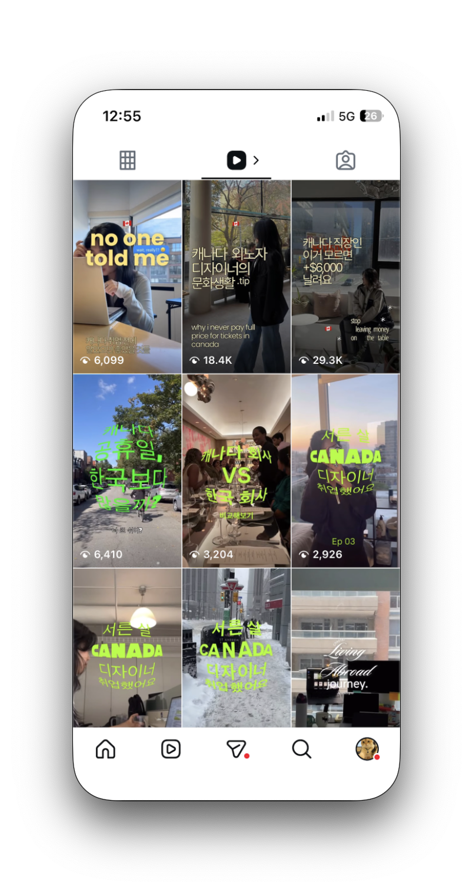

In 30 days,
I ran a 1-person AI-native content studio.
A small-scale personal lab · not a case for scale claims. The point is the pipeline · 69K organic views · 34K unique viewers · a ~188x reach multiplier on a 181-follower base · built with Claude + Meta Edits in ~10 hours of human work.
(34K unique / 181 followers)
I wanted to know how much leverage AI tools actually give a creative workflow · not in abstract, but on a live platform with real audiences and measurable signals.
Korea-market insight applied to a diaspora niche. The lab community · Korean working-holiday and immigration professionals in Canada · shares the save-heavy, decision-before-scroll behavior common in Korean information-seeking audiences. I'm a member of this community · which gave me insider access to vocabulary, questions, and the exact moment a saved piece of content gets acted on.
The account has 8 Reels total · 3 early pieces published without AI, and 5 produced through the AI-native pipeline. This case study focuses on the AI-native set · where the pipeline was fully running and iterations compounded.
The brief runs on two layers at once.
Zero budget · 181 followers · hyper-niche target. How do I build meaningful reach on Instagram Reels?
How much of a content studio can one person run with AI as leverage? 30 days, 5 Reels · but the headline understates the flow. Most of those 30 days went into setup and learning. Once the flow was running, it sustains ~1 Reel/day. What's proven is that a 1-person content studio can actually ship with AI in the loop.
Source · Instagram Insights. The saves-to-likes ratio on the early Reels skewed higher than the platform baseline · a quiet but telling signal that this audience moves with intent. They save content for later action · they don't just scroll.
Information for immigration, tax season, job searches · these aren't impulse reads. They're decisions that sit in a saved folder until the moment arrives.
For a high-intent audience, save rate and share rate are the signals worth optimizing for · not likes. A save is a decision. The algorithm rewards it.
Two hypotheses tested in parallel.
H1 · Workflow hypothesis. Persistent context (a CLAUDE.md file holding my voice, background, and content pillars) plus domain-specific prompt layering will out-leverage generic prompting · enough to let one person run a 5-Reel test cycle in 30 days.
H2 · Creative hypothesis. Utility-first hooks (concrete value in the first 3 seconds · e.g. "$6,000 in annual benefits you're missing") will out-perform comparison hooks (e.g. "Canada vs Korea") on save and share rate · because utility triggers immediate action, curiosity triggers a scroll.
A five-step pipeline · two human-AI handoffs, all orchestrated from a single CLAUDE.md file in my Obsidian vault.
The 3 pillars derived in Step 02. Every Reel maps to one. The Core pillar is the account's heart · where growth and identity compound. Entry and Utility are gateways that pull new viewers toward Core.
 Evidence · CLAUDE.md in Obsidian
The persistent context file · the first AI layer of the pipeline
Evidence · CLAUDE.md in Obsidian
The persistent context file · the first AI layer of the pipeline
Step 05 in practice. After each Reel, I paste the Insights numbers back into the Claude session · the model already holds CLAUDE.md as context, so it evaluates the data against my voice, my pillars, and the last hypothesis. The prompt pattern looks like this.
Two hook formats tested across the 5 AI-native Reels. Results section below tracks the 3 most recent in chronological order · so the pipeline's learning curve is visible, not averaged away.
| Format | Hook Type | Example |
|---|---|---|
| A · Utility-first | Number-led · actionable takeaway | "$6,000 in benefits" · "30–50% show discounts" |
| B · Comparison | Cultural contrast | "Canada vs Korea holidays" |
Show Discounts
video pending
"30–50% show discounts you can actually use."
Number-led hook delivered in the first 3 seconds · concrete utility, not curiosity. Highest save and share rate of the 5-Reel set.
Three Reels in the order they published · the arc shows how the pipeline learned from each iteration.
| Order | Content | Format | Views | Saves | Shares | Eng. Rate |
|---|---|---|---|---|---|---|
| 01 · earliest | Canada Holidays | Comparison | 6.1K | 9 | 11 | 0.9% |
| 02 · middle | Show Discounts | Utility-first | 18.4K | 438 | 252 | 4.9% |
| 03 · most recent | Benefits $6,000 | Utility-first | 29.3K | 293 | 174 | 2.1% |
The arc · Reel 01 to 03. Comparison hook underperformed on save rate (0.9%). Pivoted to utility-first for Reel 02 · saves jumped 48x, engagement hit 4.9%. Reel 03 kept the format and reached wider · but engagement diluted as the algorithm pushed beyond the core niche. The pipeline learned. I learned.

Top 3 Reels · summary Three Reels side-by-side · what the learning arc looked likeCanada Holidays
video pending
Show Discounts
video pending
Benefits $6K
video pending
Reel 02 (Show Discounts · 438 saves) vs Reel 03 (Benefits $6K · 293 saves). Both utility-first, yet save rate differs by 4x when normalized to views. My working hypothesis runs on three variables ·
① Script approach. Show Discounts opened with a stackable list of usable stores · a script optimized for skim-and-save. Benefits $6K led with an abstract dollar figure that needed context before it became usable.
② Target fit. Reel 02 landed inside the core niche · the people already thinking about cost-of-living. Reel 03 traveled further on the algorithm, but every viewer outside the niche was non-target · they watched but didn't save.
③ Algorithmic dilution. Wider reach lowers engagement rate by definition · the denominator grows faster than intent. This is the tradeoff the algorithm itself creates, not a failure of the hook.
Next test isolates variable ① by holding target and reach constant · same audience, different script architecture. That's in What's Next.
Where the AI pipeline actually paid off · measured in human hours per Reel.
 Account · @in2weeks.ca
Profile grid view · the 30-day output
Account · @in2weeks.ca
Profile grid view · the 30-day output
1 · AI accelerates three of the four creative stages. Ideation, production, and analysis all compress dramatically when the AI reads persistent context instead of being re-briefed from scratch.
2 · Voice tone is the last thing AI catches up on. "This sounds like me" still takes 3–8 hours per Reel · and I'm not satisfied yet. The work isn't finished. Naming that honestly is part of being a serious AI user rather than a believer.
3 · Persistent context had the highest ROI. The first hour spent structuring CLAUDE.md saved an estimated 20+ hours downstream · by the second Reel the pipeline was already running without me re-explaining who I am or who I'm writing for.
4 · The algorithm rewards decisions, not scrolls. Utility-first hooks beat comparison hooks 4x on saves and 23x on shares. Saves and shares are high-intent signals · likes are passive noise.
Applied immediately · every subsequent script leads with a concrete value hook in the first 3 seconds. Format is secondary to the promise in the opening frame.
1 · Close the voice-tone loop. Every Reel I rewrite to sound like me becomes a new sample in CLAUDE.md · a feedback loop that should compound. Goal for next 30 days · bring the 3–8 hour calibration step down to 1–2.
2 · Layer personal narrative onto utility hook. Hypothesis · adding human identity to information content will increase follower-conversion from non-follower viewers. The utility hook earns the click · the identity earns the follow.
3 · Extend the pipeline across Meta surfaces. The CLAUDE.md + 5-step loop is format-agnostic. Next variant tests apply the same pipeline to Stories (15-sec snackable) and Feed carousels (multi-slide save-bait) · holding audience constant to isolate surface-hook fit, not channel effect.